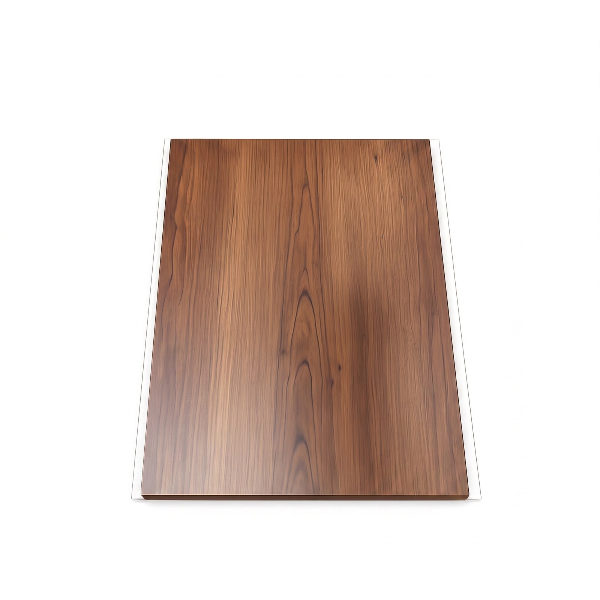

Cielorraso de PVC
Cielorraso PVC Roble Oscuro 5,95 m
Cielorraso de PVC en tono roble oscuro y largo 5,95 m. Terminación para techos interiores mediante piezas con encastre, sobre una estructura de soporte adecuada. Confirmamos accesorios y cantidades antes del pedido.
- Color / diseño
- Roble Oscuro
- Material
- PVC
- Largo
- 5,95 m
- Presentación
- Caja de 10 piezas
- Uso
- Cielorrasos interiores
- Instalación
- Sobre estructura de soporte; no autoadhesiva
Disponibilidad FORMA: Sin stock temporal
Consultar precio
Calculá tu superficie
Estimación de material. Ajustamos cortes, accesorios y cantidades antes de confirmar. No incluye colocación ni envío.
Confirmamos precio, disponibilidad y entrega antes de cerrar el pedido.